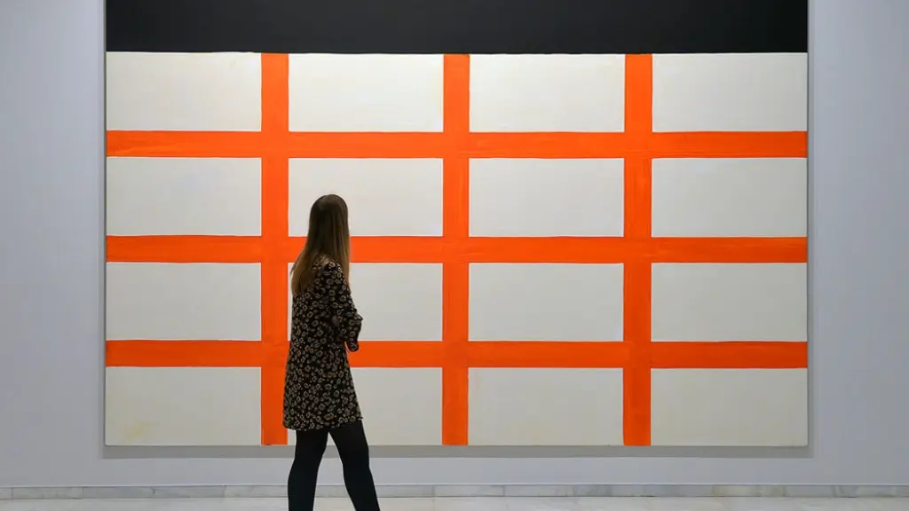

HISTORIA DEL ARTE

El arte, ahora símbolo de la elevación humana, atraviesa una de sus etapas más decadentes; su voz, antes resonante y trascendente, parece ahora ahogada en un vacío de artificio y superficialidad. A lo largo de la historia, el arte fue el medio mediante el cual la humanidad expresaba su espiritualidad, su lucha y su búsqueda de sentido; sin embargo, en el presente siglo, ese lenguaje ha sido deformado, transformado en un simulacro de sí mismo. Como señala Danto (1997), la muerte del arte no implica la desaparición de la producción artística, sino la pérdida de su propósito metafísico; el arte actual continúa existiendo en forma, pero no en esencia. El siglo XX marcó un punto de inflexión: la irrupción de las vanguardias liberó la creatividad, pero también abrió la puerta a la banalización; el gesto rebelde se convirtió en un producto más del mercado, y la búsqueda de lo sublime fue sustituida por el espectáculo y la provocación vacía (Freeland 2001). Lo que antes era comunión estética entre el creador y el espectador, hoy se diluye en un intercambio mercantil, donde lo absurdo se confunde con lo innovador. Así, el arte contemporáneo se ha convertido en un espejo deformado de una sociedad que ha perdido el sentido de la belleza, la profundidad y la autenticidad.
El arte, entendido como ser, es hoy un cuerpo exánime; respira aún, pero sin alma. Su piel brilla en las galerías y ferias internacionales, vestida con discursos pseudo filosóficos que buscan justificar lo injustificable; cuadros monocromos, objetos cotidianos elevados a arte por decreto y performances vacías son síntomas de un arte que ha perdido el contacto con la humanidad que alguna vez lo nutrió. Según Stallabrass (2004), el arte contemporáneo está dominado por el capital y la política cultural, donde el valor de una obra depende más del nombre del artista y del respaldo institucional que de su mérito intrínseco. En ese contexto, el arte deja de ser creación y se convierte en simulacro, una máscara que esconde su vacío. La crítica más profunda radica en que el arte ha dejado de ser un diálogo con el ser humano; ya no interpela, no emociona ni transforma; se limita a provocar una reacción pasajera, un gesto de sorpresa o incomodidad que pronto se disuelve en la indiferencia. El espectador contemporáneo, bombardeado por la inmediatez digital, ha perdido la paciencia y la sensibilidad necesarias para contemplar; el arte se adapta a esa velocidad, ofreciendo imágenes fáciles, ideas prefabricadas y conceptos que apelan más al intelecto superficial que a la experiencia estética profunda. Como advierte Scruton (2009), la belleza —núcleo del arte verdadero— ha sido sustituida por la ironía y el cinismo; el resultado es una cultura visual sin trascendencia. El arte moderno, en su búsqueda de libertad, terminó encadenado a su propio narcisismo. La autonomía artística que defendieron las vanguardias degeneró en una obsesión por la originalidad vacía; el artista contemporáneo ya no busca expresar la verdad o explorar el alma, sino diferenciarse a cualquier precio. La obra deja de ser un acto de comunión para convertirse en un gesto autorreferencial; el arte se mira al espejo y se celebra a sí mismo, ignorando al público que una vez lo veneró. Bourriaud (2002) describe este fenómeno como “posproducción”, donde el artista ya no crea sino recicla; toma elementos existentes del mundo y los reconfigura sin añadir significado, lo que genera un arte saturado de citas pero carente de espíritu. El arte, si se concibe como un ser, agoniza en un hospital de neones; alimentado por curadores, marchantes y críticos que prolongan su vida artificial mediante discursos teóricos. Este arte respira con ayuda de máquinas, sostenido por el dinero y la corrección cultural; su cuerpo se mueve, pero sus ojos están vacíos. Es un ser sin fe ni trascendencia, cuyo único propósito es mantenerse visible en el ruido mediático. Como apunta Groys (2010), el arte contemporáneo ya no busca la eternidad, sino la visibilidad; en lugar de luchar por la inmortalidad simbólica, se conforma con el instante viral. Esa renuncia al tiempo es la verdadera muerte del arte.
No obstante, la decadencia no surge de la nada; es el reflejo de una humanidad desconectada de lo sagrado, de lo espiritual y de la contemplación. El arte ha sido víctima de la misma enfermedad que corroe al mundo moderno: la pérdida de sentido. La técnica ha desplazado a la inspiración; el mercado ha reemplazado al mito; la ironía ha devorado a la belleza. En palabras de Han (2012), vivimos en una sociedad del rendimiento y la exhibición, donde todo —incluso el arte— debe ser útil, rentable y visible. En ese contexto, la creación auténtica, aquella que exige silencio y profundidad, no tiene lugar; es rechazada como obsoleta o elitista. El resultado es un arte despersonalizado; una fábrica de signos que produce emociones estandarizadas. Las obras dejan de ser confesiones del alma y se convierten en experimentos visuales diseñados para ser consumidos en segundos. La galería se transforma en escaparate; el museo, en parque temático; el artista, en influencer. En este nuevo orden, la obra de arte ha perdido su aura, esa cualidad intangible que Benjamin (1936) consideraba esencial para la experiencia estética. Sin aura, el arte es solo materia; un cadáver embalsamado que conserva su forma, pero no su espíritu. Sin embargo, incluso en este panorama desolador, subsiste una paradoja: el arte sigue siendo necesario. Aunque enfermo, el arte conserva la memoria de lo que fuimos; su decadencia es, a la vez, testimonio de nuestra propia crisis. Hablar del arte como un ser moribundo no es una metáfora gratuita; es una constatación de que la cultura contemporánea ha elegido la simulación sobre la verdad, la apariencia sobre la esencia. Pero también implica que, mientras exista conciencia de su agonía, habrá posibilidad de resurrección. La historia del arte demuestra que toda muerte es seguida por un renacimiento; quizás, en el silencio de la desilusión actual, se esté gestando una nueva forma de belleza, más humana y sincera. El arte ha muerto muchas veces; y, cada vez, ha renacido de sus cenizas. Pero para que eso ocurra, debe reconocerse primero su estado actual: un cuerpo vacío sostenido por palabras y dinero. Tal vez el verdadero arte del futuro nacerá no de las galerías, sino de la necesidad de volver a sentir. Mientras tanto, este arte moribundo nos recuerda quiénes fuimos y cuánto hemos olvidado.